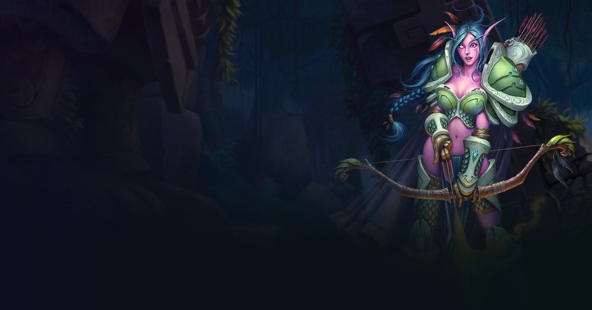

Hunter pets nerfed in WoW Forever: Dismember, Sonic Blast and Mine!
The October 15, 2026 WoW Forever beta build is a Hunter pet nerf: three abilities that overlapped too much with what other classes already do lose duration and strength, and come back less often. We worked out what it really means: the average effect of Dismember and Sonic Blast drops to a fifth.
WoW Forever Hunter patch: the three nerfed abilities
- NERF Dismember (crocolisk): healing reduction falls to 25% instead of 50%, lasting 6 s instead of 10 s, with a 15 s cooldown instead of 6 s.
- NERF Sonic Blast (bat): the casting slow falls to 30% instead of 60%, lasting 20 s instead of 30 s, with a 60 s cooldown instead of 30 s.
- NERF Mine! (bird of prey): the disarm lasts 3 s instead of 4 s and comes back every 90 s instead of 60 s.
- Why: the community felt Hunters were gaining too much utility, especially in PvP, with effects that duplicated those of Warriors or Warlocks.
How long these effects stay up: the maths
An effect that lasts 10 s on a 6 s cooldown is up all the time: the pet reapplies it before it ends. After the patch Dismember lasts 6 s on a 15 s cooldown, so 40% of the time. Sonic Blast goes from 30 s on a 30 s cooldown (permanent) to 20 s on 60 s, a third of the time. Mine! goes from 4 s every 60 s to 3 s every 90 s.
| Ability | Effect | Average effect before | Average effect after |
|---|---|---|---|
| Dismember | Healing received | -50% | -10% (25% × 40%) |
| Sonic Blast | Casting speed | -60% | -10% (30% × 33%) |
| Mine! | Target disarmed | 6.7% of the time | 3.3% of the time |
These figures are arithmetic on the published values, assuming the pet uses the ability as soon as it is ready. They are not a combat simulation: an opponent who dispels, moves or breaks the effect will lower the real result further.
What it means for your Hunter
- In PvP this is the real nerf: a healer or caster facing a Hunter no longer suffers a permanent penalty, only a window of a few seconds. Warriors and Warlocks get room back in that role.
- In PvE the impact is small: these three abilities mostly hindered an opponent and did no real damage. Your pet's DPS does not change.
- Choosing your pet: pick the crocolisk, bat or bird of prey for their other strengths, no longer for a control effect that barely exists now.
- Other Hunter fixes in the same build: Fire traps now scale with attack power and you can have one Fire trap and one Ice trap at the same time, and pets inherit the better of melee and ranged crit.
Method: uptime calculation from the before/after values in Wowhead's database for the October 15 build. No damage simulation: these abilities deal almost nothing, their value is the control effect. The beta changes often.
Frequently asked questions
Which Hunter pet abilities are nerfed in WoW Forever?
Dismember (crocolisk), Sonic Blast (bat) and Mine! (bird of prey) in the October 15, 2026 beta build: weaker and shorter effects with a longer cooldown.
Is Beast Mastery Hunter weaker in PvE?
Not for damage: the nerf hits control effects that matter mostly in PvP. Dismember's uptime falls from 100% to 40% and Sonic Blast's from 100% to a third.